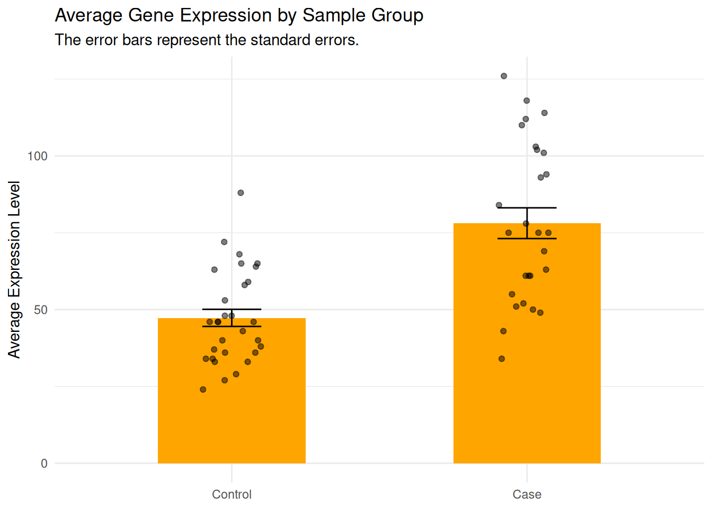

Error in which(vec_num = 3): unused argument (vec_num = 3)
Correction
which(vec_num ==3)
[1] 4 8 10
Fix error in ggplot2. The goal is to show petal length with a boxplot for each species.
ggplot(iris, aes(x = Sepal.Length, y = Species))geom_boxplot()
Error in ggplot(iris, aes(x = Sepal.Length, y = Species)): could not find function "ggplot"
Error in geom_boxplot(): could not find function "geom_boxplot"
Correction
library(ggplot2) # load the package before useggplot(iris, aes(x = Sepal.Length, y = Species)) +# need "+" between layersgeom_boxplot()
Fix error in ggplot2. The aim is to draw boxplot for each group.
# simulate data for two groups of samples.set.seed(1)data <-data.frame(gp =rep(1:2, each =20),value =c(rnorm(20), rnorm(20, mean =5)))str(data)
'data.frame': 40 obs. of 2 variables:
$ gp : int 1 1 1 1 1 1 1 1 1 1 ...
$ value: num -0.626 0.184 -0.836 1.595 0.33 ...
# draw boxplot by group.ggplot(data, aes(x = gp, y = value)) +geom_boxplot()
Warning: Orientation is not uniquely specified when both the x and y aesthetics are
continuous. Picking default orientation 'x'.
Warning: Continuous x aesthetic
ℹ did you forget `aes(group = ...)`?
Correction
ggplot(data, aes(x =factor(gp), y = value)) +geom_boxplot()
Fix code in data filtration.
# try to keep rows where the value is smaller than -0.5data[data$value<-0.5, ]
[1] gp value
<0 rows> (or 0-length row.names)
Correction
str(data) # the original data was changed!
'data.frame': 40 obs. of 2 variables:
$ gp : int 1 1 1 1 1 1 1 1 1 1 ...
$ value: num 0.5 0.5 0.5 0.5 0.5 0.5 0.5 0.5 0.5 0.5 ...
Correction
# rebuild the data frameset.seed(1)data <-data.frame(gp =rep(1:2, each =20),value =c(rnorm(20), rnorm(20, mean =5)))data[data$value <-0.5, ]
gp value
1 1 -0.6264538
3 1 -0.8356286
6 1 -0.8204684
13 1 -0.6212406
14 1 -2.2146999
Basic Analysis Workflow
Data collection
Quality control & Data preparation
Check missing values, outliers, input error, etc.
Clean the dataset, reshape the data, recode variables, transform data if needed.
Exploratory analysis
Use summary statistics (means, medians, counts, etc.)
Visualize with tables and plots to understand distributions and trends.
Inferential statistics & modeling
Apply statistical tests or fit models to answer the biological question.
Example: t-test, ANOVA, linear regression, etc.
Results interpretation
Mini Data Project
Gene expression data were collected from samples of two groups. Help the researcher to perform data quality control and check if the expression is different between groups.
Tasks:
Download the data (link) and import it into Rstudio, name it rnaseq_data.
Rows: 60 Columns: 3
── Column specification ────────────────────────────────────────────────────────
Delimiter: ","
chr (2): sample_id, sample_group
dbl (1): expression
ℹ Use `spec()` to retrieve the full column specification for this data.
ℹ Specify the column types or set `show_col_types = FALSE` to quiet this message.
Correction
rnaseq_data
# A tibble: 60 × 3
sample_id expression sample_group
<chr> <dbl> <chr>
1 sample1 46 Control
2 sample2 72 Control
3 sample3 29 Control
4 sample4 64 Control
5 sample5 37 Control
6 sample6 36 Control
7 sample7 40 Control
8 sample8 65 Control
9 sample9 68 Control
10 sample10 34 Control
# ℹ 50 more rows
Perform data quality control and describe the data.
TipHints
If missing value exists, which variable(s) and sample(s) are concerned?
Do we need to recode variable?
Correction
# Summarise datasummary(rnaseq_data)
sample_id expression sample_group
Length:60 Min. : 24.00 Length:60
Class :character 1st Qu.: 43.00 Class :character
Mode :character Median : 58.00 Mode :character
Mean : 61.89
3rd Qu.: 75.00
Max. :126.00
NA's :3
Correction
# Show only rows with missing valuesrnaseq_data[is.na(rnaseq_data$expression), ]
# A tibble: 3 × 3
sample_id expression sample_group
<chr> <dbl> <chr>
1 sample36 NA Case
2 sample42 NA Case
3 sample49 NA Case
Correction
## or find the index of NAswhich(is.na(rnaseq_data$expression))
# A tibble: 3 × 3
sample_id expression sample_group
<chr> <dbl> <chr>
1 sample36 NA Case
2 sample42 NA Case
3 sample49 NA Case
Correction
## recode the sample_group as factorrnaseq_data$sample_group <-factor(rnaseq_data$sample_group, levels =c("Control", "Case"))
Remove rows with missing values. Create a new dataset without missing values.
Correction
# Remove rows where expression is NAdata_clean <- rnaseq_data[!is.na(rnaseq_data$expression), ]# Show the cleaned datasetdata_clean
# A tibble: 57 × 3
sample_id expression sample_group
<chr> <dbl> <fct>
1 sample1 46 Control
2 sample2 72 Control
3 sample3 29 Control
4 sample4 64 Control
5 sample5 37 Control
6 sample6 36 Control
7 sample7 40 Control
8 sample8 65 Control
9 sample9 68 Control
10 sample10 34 Control
# ℹ 47 more rows
Find the average expression (mean()) and the standard deviation (sd()) for each sample group (Control vs. Case)
Correction
# Compute mean and sd of expression for each sample groupexpr_ctrl <- data_clean$expression[data_clean$sample_group =="Control"]mean(expr_ctrl)
## Violin plot to show variability and density of expression levelsggplot( data_clean,aes(x = sample_group, y = expression, fill = sample_group)) +geom_violin() +geom_point(position =position_jitter(height =0, width =0.2, seed =1),alpha =0.5 ) +labs(title ="Violin Plot - Expression Distribution per Group",x =NULL,y ="Expression" ) +theme(legend.position ="none")
To go futher: Let’s visualise the average expression of each group using a barplot as shown below, with the help of ChatGPT (or any other AI tool).

NoteStats Time!
Standard Deviation (SD) measures the variability of values in a sample (dataset). \[
SD = \sqrt{\frac{\sum(x_i - \bar{x})^2}{n-1}} = \sqrt{\text{variance}}
\]
Standard Error (SE), usually we talk about the SE of the mean (SEM), it measures the variability of the mean of a sample compared to the mean of the population.
\[
SE = \frac{SD}{\sqrt{n}}
\]
6a. Prepare data for barplot with error bars.
TipHints
We need to reorganize the data in a dataframe with 2 rows and 3 columns:
the column group contain the name of each group
the column mean_val contain the average expression of each group
the column se_val contain the standard error of each group
group mean_val se_val
1 Control 47.30000 2.788379
2 Case 78.11111 4.999525
6b. Draw the bar plot:
Plot bars for mean expression (geom_bar(stat = "identity"))
Add error bars for standard errors (geom_errorbar())
Change the aesthetic apsects as you want, e.g.: color, title, legend, etc.
Correction
p_bar <-ggplot(data = gg_data, aes(x = group, y = mean_val)) +geom_bar(stat ="identity", fill ="orange", width =0.5) # bar plotp_bar
Correction
p_bar_error <- p_bar +geom_errorbar( # add errorbaraes(ymin = mean_val - se_val, ymax = mean_val + se_val ), width =0.2# smaller width of error bar )# change labels and themep_bar_error +labs(title ="Average Gene Expression by Sample Group",subtitle ="The error bars represent the standard errors.",x =NULL, y ="Average Expression Level" ) +theme_minimal()
6c: What if we want to add the expression level of each sample to the bar plot?
TipHints
Add another layer for drawing points (geom_point), using the data frame that contains the individual data (data_clean).
Correction
# change labels and themep_bar_error +labs(title ="Average Gene Expression by Sample Group",subtitle ="The error bars represent the standard errors.",x =NULL, y ="Average Expression Level" ) +theme_minimal() +geom_point( # add the layer of pointsdata = data_clean, # use the individual dataaes(x = sample_group, y = expression), # map axesposition =position_jitter( # add random noise to avoid overlap between pointswidth =0.1, height =0, # allow the points to be spread across a small horizontal range (width = 0.1),# while keeping the value on y-axis fixed (height = 0)seed =1 ),alpha =0.5# transparency )
Alternative
# alternative use stat_summaryggplot(data_clean, aes(x = sample_group, y = expression)) +stat_summary(fun = mean, geom ="bar", fill ="orange", width =0.5) +stat_summary(fun.data = mean_se, geom ="errorbar", width =0.2) +geom_point(position =position_jitter(width =0.1, height =0, seed =1),alpha =0.5 ) +labs(title ="Average Gene Expression by Sample Group",subtitle ="The error bars represent the standard errors.",x =NULL, y ="Mean Expression Level" ) +theme_minimal()
Is the expression different between groups? Select a test to compare the expression between groups. What is your conclusion?
wilcox.test(expr_ctrl, expr_case)
Warning in wilcox.test.default(expr_ctrl, expr_case): cannot compute exact
p-value with ties
Wilcoxon rank sum test with continuity correction
data: expr_ctrl and expr_case
W = 124, p-value = 7.288e-06
alternative hypothesis: true location shift is not equal to 0
# or check the normality and perform a t-testshapiro.test(expr_ctrl)
Shapiro-Wilk normality test
data: expr_ctrl
W = 0.94485, p-value = 0.1229
shapiro.test(expr_case)
Shapiro-Wilk normality test
data: expr_case
W = 0.95315, p-value = 0.2555
t.test(expr_ctrl, expr_case)
Welch Two Sample t-test
data: expr_ctrl and expr_case
t = -5.3823, df = 41.123, p-value = 3.229e-06
alternative hypothesis: true difference in means is not equal to 0
95 percent confidence interval:
-42.37099 -19.25123
sample estimates:
mean of x mean of y
47.30000 78.11111
Good job! 👏👏 You’ve taken your first big steps into R, and you’re off to a great start, keep it up!